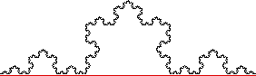

| Let's try the same method to measure the length of the Koch curve. |
| First, we approximate the Koch curve by the straight line segment between its endpoints. Call the length of this line segment L0. |
| For example, we might say L0 = 1 meter. Whatever it is, the length of the Koch curve is greater than 1. |
|  |
| Here is the second approximation. |
Return to Ineffective Ways to Measure.